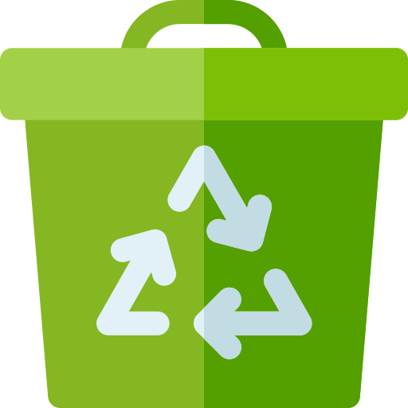

Лучшие компании
Здесь собраны статьи о лучших марках воды и о том, почему они на являются одним из лучших выборов.

Центры переработки пластика
Узнайте о центрах переработки пластика, а также о том, как сильно это влияет на нашу экосистему.
Создание и отправка
Узнайте все о добыче и очистке воды, а также создании бутылок: разные компании используют совершенно разные способы!